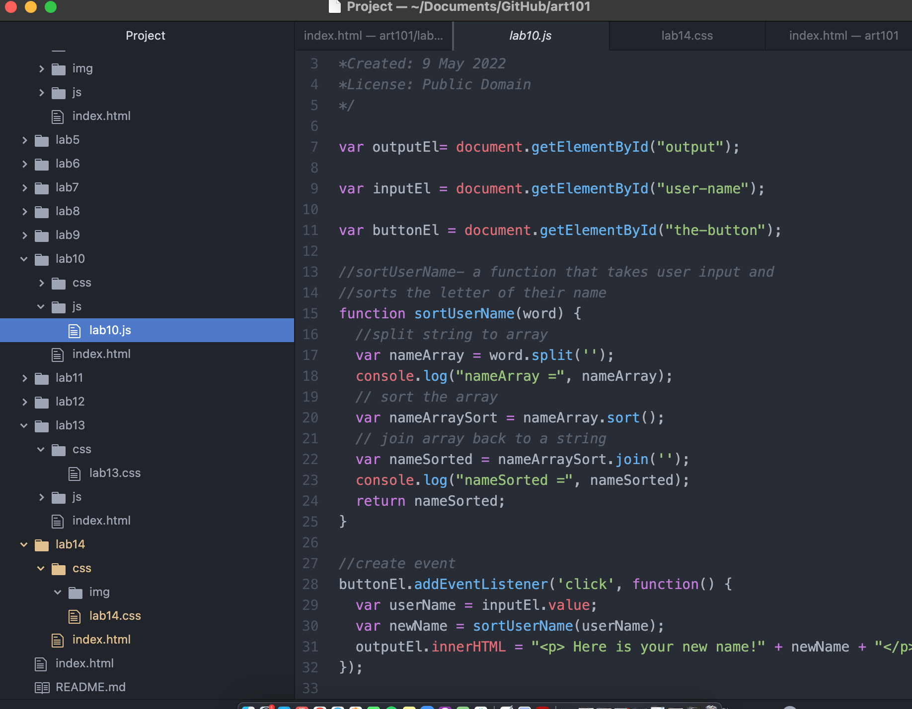
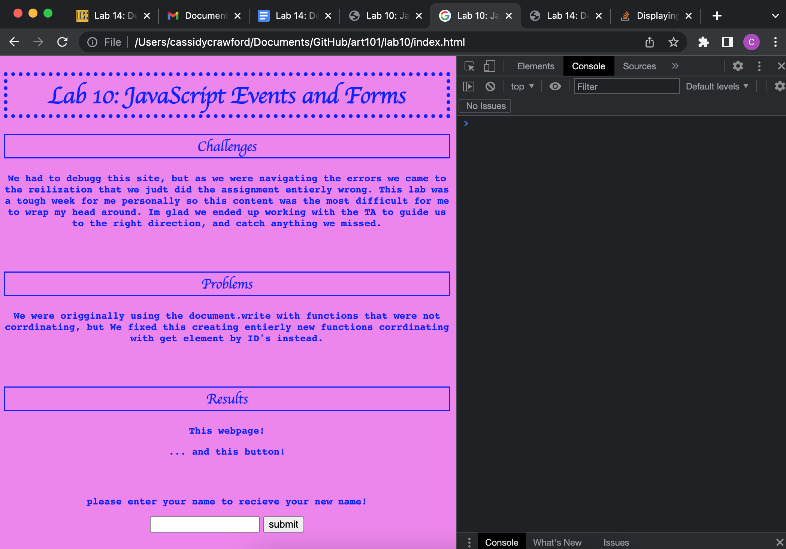

Lab 14: Debugging & Strategies
Challenges
We faced challenges with lab 10, and when we originally thought we would be debugging and working through the errors, we ultimately had to redo the whole assignment because of how wrong we had done it initially.
Problems
The main issue we fixed was not using a window prompt but an inputted submission prompt. Once we rewort the code using getELementById instead of document.write we were able to fix any syntax errors the popped up ultimately fixing all our issues and getting the lab 10 to work properly.
Debugging Results

